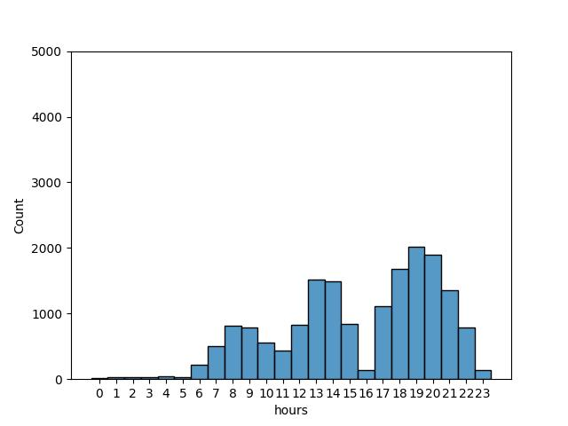

Ноутбук:
Генерация нескольких транзакций для случайной выборки клиентов. При генерации контроль времени транзакций, чтобы они не были похожи на фрод. Данные клиентов оригинальные, например: устройства с которых совершены транзакции, IP-адреса. Суммы генерируются исходя из отдельных для данных о категориях созданных под легальные транзакции. Сгенерированные транзакции пишутся в отдельный файл.
Для генерации каждого типа транзакций - легальных, фрод - нужны
конфиги и данные. Например, конфиги: сколько транзакций генерировать,
разные лимиты; данные: клиенты, данные мерчантов, данные об устройствах
клиентов. Данные хранятся в отдельных файлах, созданных заранее. Конфиги
хранятся в yaml файлах. Чтобы все это передавать в функции
и классы генерации, через отдельный класс - конфиг билдер - создается
объект конфиг класса в котором будут хранится данные и нужные конфиги.
Под каждый раздел генерации свой конфиг билдер и свой конфиг класс,
значит у легальных транзакций они свои.
LegitCfg - конфиг классLegitConfigBuilder - конструктор конфиг класса - конфиг
билдерВремя для каждой транзакции случайно берется из диапазона
таймстемпов. Границы диапазона задаются в time.yaml.
Берется случайно, но в соответствии с заданным распределением по часам
внутри суток. Для легальных транзакций их три: круглосуточные категории
покупок, дневные категории покупок, онлайн покупки. Распределения
фактически созданы вручную и передаются в виде вероятностных весов
каждого часа в сутках при семплировании времени из диапазона.
Распределения создавались для реалистичности времени транзакций,
например у круглосуточных категорий очень низкая ночная активность,
небольшая с утра, небольшой пик в обед, затем вечерний пик от 17:00 и до
20:00 и спад к 22:00. И тому подобное. Генерация распределений и их
графики в этом ноутбуке Базовая генерация времени.
Пример. Распределение времени для круглосуточного легального оффлайна
Если это первая транзакция для клиента, то просто берем семплированный таймстемп. Если нет, то проверяем семплированный таймстемп на чрезмерную близость ко времени уже созданных транзакций клиента. Это нужно чтобы не было случайного попадания под фрод если время меньше допустимого. Если есть конфликты по времени, то создается таймстемп основываясь на времени последней транзакции клиента: время + случайная разница в рамках допустимого.
Функции
sample_time_for_trans - это функция из общего модуля
базовой генерации времени. Семплирование времени из диапазона
таймстемпов.check_min_interval_from_near_txn - проверка есть ли
транзакции ближе допустимого по времени. Генерирует новое время если
такие есть, новое время генерируется на основе времени последней по
времени транзакции плюс случайная разница в рамках допустимых
лимитовget_legit_txn_time - конечная функция генерации
времени, использует функции вышеФункция
get_txn_location_and_merchant
В отдельную функцию вынесена генерация данных для полей транзакции: ID
мерчанта, координаты транзакции, IP-адрес, город совершения
транзакции.
Для онлайн транзакций:
Для оффлайн транзакций:
Функция generate_one_legit_txn.
Применяет в себе функцию генерации времени и части данных
транзакции.
Также выполняет:
В итоге возвращает готовую транзакцию
Функция gen_multiple_legit_txns.
Логика
LegitTxnsRecorder. Кол-во транзакций на каждый файл
выставляется в конфиг файле legit.yaml. Запись частями
сделана на случай если генерируется очень много транзакций, чтобы не
держать целый датафрейм в памяти.LegitTxnsRecorder собирает из
файлов единый датафрейм и пишет его в файл в двух директориях:
индивидуальной директории под текущий запуск генератора и директорию
последнего запускаДля легальных транзакций есть отдельный класс
оркестратор - LegitRunner, который получает на вход данные
конфиг файлов и путь к директории текущего запуска. Исходя из этих
данных он создает объект конфиг билдера, через билдер создает объект
конфиг класса и объект класса записывающего транзакции.
При вызове run() метода оркестратора происходит полный
процесс генерации легальных транзакций.